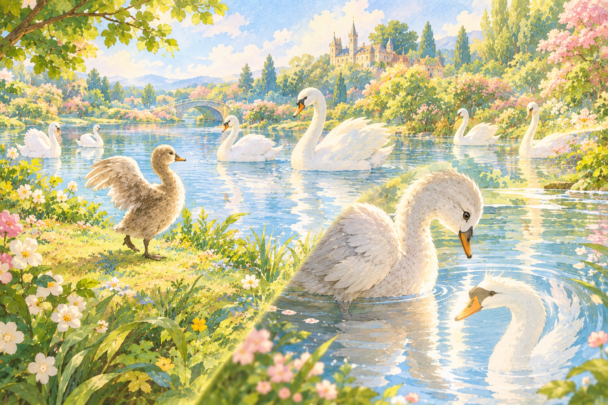

기나긴 고통의 시간이 지나고 마침내 따스한 봄이 찾아왔습니다. 아기 오리가 힘차게 날개를 펼쳐 날아간 곳에는 아름답고 우아한 하얀 백조 무리가 평화롭게 노니는 눈부신 정원이 펼쳐져 있었습니다.
자신의 처지를 비관하며 죽음을 각오하고 백조들에게 다가갔던 아기 오리는, 물속에 비친 자신의 모습에 깜짝 놀랐습니다. 그것은 더 이상 꼴사납고 못생긴 잿빛 새가 아니라, 당당하고 찬란한 우아함을 뽐내는 한 마리의 아름다운 백조였습니다.